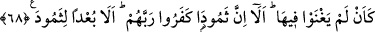

Sana diz çökmeyi öğrettikleri
Seni böyle diz çökmeden korkuttukları vakit diz çök.
68. Orada hiç kalmamış gibi oldular. İyi bilin ki, Semud kavmi Rab’lerini inkar
ettiler. Yine iyi bilin ki, Semud kavmi (Allah’ın rahmetinden) uzak kılındı.”
“Orada hiç kalmamış gibi oldular.” Yani, yurtlarında daha önce hiç ikamet etmemiş,
hayat sahipleri olarak koşuşturup durmamış gibi oldular. Sanki hiç var olmamış, daha
önce hiçbir yerde ikamet etmemiş gibi çöküp kaldılar.
“İyi bilin ki Semud kavmi Rab’lerini inkar ettiler.” Yani Allah Teâlâ’nın birliğini
kabul etmediler. Bu ifade, daha sonra gelecek insanlar için bir uyarı ve korkutmadır.
“Yine iyi bilin ki Semud kavmi” Allah’ın rahmetinden “uzak kılındı.” Uzaklaştılar ve
helak oldular.
Helak oldukları halde, helak olsunlar diye beddua etmenin faydası, köklerini kazıyan
bu azaba, inkarları, yalanlamaları ve Allah Teâlâ’nın devesini kesmeleri yüzünden
müstahak olduklarını göstermektir.
Cabir (r.a)’den rivayet edildiğine göre Hz. Peygamber (s.a.) Tebük Gazvesi esnasında
Hicr’de konaklayınca bir hutbe irad etmek üzere ayağa kalkıp şöyle buyurmuştur: “Ey
İnsanlar! Peygamberinizden mûcizeler istemeyin. İşte Salih’in kavmi peygamberlerinden
kendileri için o deveyi getirmesini istediler. Kendi su içme gününde bu geniş yoldan
gelip sularını içiyordu. Onlar da devenin su içmediği gün onun suyundan içtikleri gibi,
sütünü de sağıyorlardı. Sonunda Rablerinin emrini çiğnediler. Salih de onlara:
“Yurdunuzda üç gün daha yaşayın. Bu, Allah’tan gelen ve yalan olmayan bir tehdittir.”
dedi. Sonra o korkunç ses geldi ve Allah o memleketin doğusundakileri de
batısındakileri de helak etti. Sadece Allah’ın korumasında olan biri, bu koruma
sayesinde Allah’ın azabından kurtuldu. Bu adamın adı Ebû Riğâl’dir. Oradakiler: “Ebû
Riğal kimdir, Ya Rasulallah?” diye sorunca “Sakîf kabilesinin atası” diye cevap verdi.
[153]
Burada şöyle bir işaret vardır: Hadisteki bu ifade, Allah’ın koruması demek olan
şeriatın himayesinde bulunanların dışında nefsin ve sıfatlarının uzaklık azabı ve kahr
şimşeği ile helâk edileceklerine işaret ediyor. Yani, nefis ve sıfatları, îmân etmese fakat
şeriatın korumasına sığınsa, uzaklık azabından emin olur ve sığındığı miktarda
yakınlaşır, Hakk’ın komşuluğunu, yani cenneti kazanır. Bu sebepledir ki Cenab-ı Hak,
nefs-i mutmainne’ye: “Kullarımın arasına gir, cennetime gir.” (el-Fecr, 89/29,30)
buyurmuştur. Nitekim et-Te’vîlâtü’n-Necmiyye’de böyle geçmektedir.
İnsanlar yakınlık-uzaklık; seyr u sülûk ve bunu bırakma hususlarında sınıf sınıftırlar:
Allah Teâlâ kimi insanları hiçbir şey yapmadan, uğraşmadan kendisine ulaştırmayı